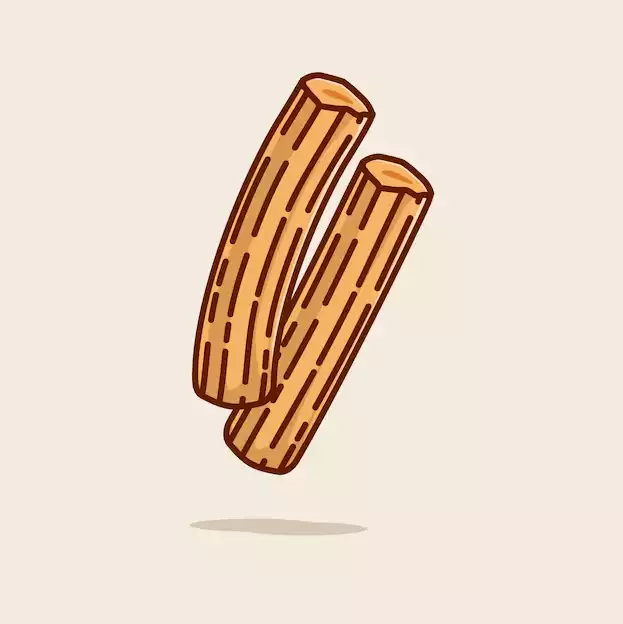
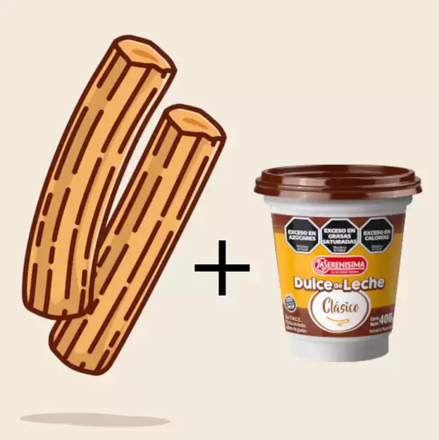

<div class="min-h-screen mt-20">
  <div class="relative">
    <div class="relative h-screen flex flex-col justify-end md:justify-center items-center md:items-end">
      <div class="absolute inset-0 parallax background-image-desktop" style="background-image: url('../../../assets/background-desktop.webp');"></div>
      <div class="absolute inset-0 parallax background-image-movil" style="background-image: url('../../../assets/background-movil.webp');"></div>
      <div class="relative z-3 text-center mb-40 md:mb-24 xl:mb-44 spacing-title xl:w-1/2 xl:p-16">
        <h1 class="text-center text-3xl md:text-5xl xl:text-7xl font-bold px-4 text-title mb-4 xl:mb-24">
          ¡LOS MEJORES <strong>CHURROS</strong> DE <strong>MARÍA TERESA</strong>!
        </h1>
        <a href="nuevo-pedido" class="bg-[#290200] text-white p-4 md:p-3 xl:p-6 xl:text-2xl cursor-pointer rounded-md text-nowrap font-bold" title="Hacer un pedido de churros caseros de Churros Dos Hermanos">
          ¡Hacer un pedido!
        </a>
      </div>
    </div>
    <div class="flex justify-center">
      <div class="px-4 md:px-8 lg:px-12 xl:px-16 2xl:px-20 py-8 bg-[#fdf6e3] md:w-1/2">
        <section class="px-4">
          <h2
            #animatedSection
            [@trigger]="animationState"
            class="text-3xl md:text-5xl my-4 font-bold text-center text-black"
          >
            ¿Quiénes somos?
          </h2>
          <div class="flex flex-col items-center">
            <p class="text-justify text-gray-800 text-xl">
              En <strong>Churros Dos Hermanos</strong>, nos dedicamos a fabricar los mejores <strong>churros caseros</strong> y <strong>artesanales</strong> de la zona. Con un toque <strong>tradicional</strong> y <strong>auténtico</strong>, nuestros <strong>churros</strong> se destacan por su <strong>sabor inigualable</strong> y la <strong>calidad de los ingredientes</strong> que utilizamos.
            </p>
            <div class="flex">
              <video #lazyVideo src="https://firebasestorage.googleapis.com/v0/b/churros-marketing.appspot.com/o/Background-Movil(1).mp4?alt=media&token=d4916249-5888-44a0-a225-26c63dfd6677" preload="none" poster="../../../assets/logo-home.webp" muted loop autoplay controls class="xl:w-72 rounded-lg my-4 md:mb-0 md:mr-4"></video>
              
            </div>
          </div>
        </section>
        <section class="mt-8 px-4">
          <h3 class="text-3xl md:text-5xl font-bold text-black text-center my-8">
            Ofrecemos una variedad de opciones que incluyen:
          </h3>
          <div class="grid grid-cols-1 md:grid-cols-2 gap-8">
            <div class="flex flex-col items-center text-center">
              
              <h1 class="font-bold text-xl xl:text-2xl mt-2 text-black">CHURROS</h1>
              <h2 class="font-semibold text-lg xl:text-xl text-gray-800">Simples</h2>
              <p class="text-gray-800 mt-2 text-xl">
                Crujientes por fuera y tiernos por dentro, nuestros <strong>churros simples</strong> son perfectos para disfrutar en cualquier momento del día.
              </p>
            </div>
            <div class="flex flex-col items-center text-center">
              
              <h1 class="font-bold text-xl xl:text-2xl mt-2 text-black">CHURROS</h1>
              <h2 class="font-semibold text-lg xl:text-xl text-gray-800">con Dulce de leche</h2>
              <p class="text-gray-800 mt-2 text-xl">
                Para los amantes del dulce, nuestros <strong>churros rellenos de dulce de leche</strong> son una delicia irresistible que te transportará a un mundo de sabores.
              </p>
            </div>
          </div>
        </section>
        <section class="flex flex-col items-center  mt-8 px-4">
          <h2 class="text-3xl md:text-5xl my-8 font-bold text-center text-black">
            Calidad y compromiso
          </h2>
          <p class="text-gray-800 text-justify text-xl">
            En <strong>Churros Dos Hermanos</strong>, cada <strong>churro</strong> es elaborado con dedicación y esmero, garantizando una experiencia culinaria única. Ya sea para un desayuno, una merienda o simplemente para satisfacer un antojo, nuestros <strong>churros</strong> son la elección perfecta.
          </p>
          <video src="https://firebasestorage.googleapis.com/v0/b/cyberscript-3284d.appspot.com/o/publicidad-calidad.mp4?alt=media&token=e2a9007a-6fbe-4058-9a4a-64d1cc7c0638" preload="none" poster="../../../assets/logo-home.webp" controls muted loop autoplay class="rounded-lg my-4 md:mb-0 md:mr-4 shadow-lg"></video>
        </section>
        <section class="mt-8 px-4">
          <p class="text-gray-800 text-justify text-lg">
            Descubre por qué somos la opción preferida para los verdaderos amantes de los <strong>churros</strong>. ¡Te llevamos el sabor y la calidez de <strong>Churros Dos Hermanos</strong> directamente a tu puerta!
          </p>
        </section>
        <div class="flex justify-center mt-8">
          <a href="nuevo-pedido" class="bg-[#290200] text-white p-4 md:p-3 xl:p-6 xl:text-2xl cursor-pointer rounded-md text-nowrap font-bold" title="Hacer un pedido de churros caseros de Churros Dos Hermanos">
            ¡Hacer un pedido!
          </a>
        </div>
      </div>
    </div>
  </div>
  <!-- Palabras clave: churros, churros caseros, churros artesanales, churros María Teresa, churros tradicionales, churros auténticos, sabor inigualable, calidad de ingredientes, Churros Dos Hermanos -->
</div>
